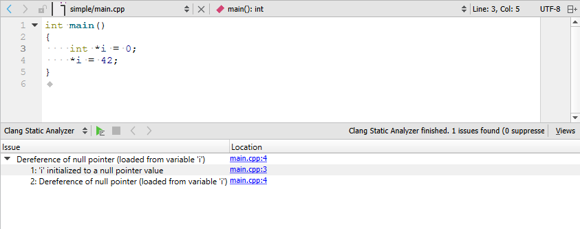
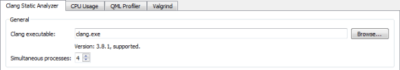

Using Clang Static Analyzer
Qt Creator integrates the Clang Static Analyzer for finding problems in C, C++, and Objective-C programs.

Select the link in the Location column to move to the location where the issue appears in the code editor.
The Clang Static Analyzer runs with all the default checkers enabled. For more information about the checkers, see Available Checkers.
To suppress diagnostics, select Suppress This Diagnostic in the context menu. To view the suppression list for a project and to remove diagnostics from it, select Projects > Project Settings > Clang Static Analyzer.
Supported Project Types and Tool Chains
The Clang Static Analyzer relies on the data (specific macros and include directories) from the projects and tool chains. Not all projects and tool chains can provide enough data for reasonable results.
Currently, only Qbs and qmake projects together with the GCC, MinGW, Clang and Microsoft Visual Studio tool chains are supported.
Setting Up Clang Static Analyzer
As a tested version of Clang is shipped together with Qt Creator, no manual setup is required.
To profit from improved checkers in newer Clang versions, Qt Creator can be set up to use those. However, only the shipped version of Clang is tested and known to work. Other versions might not work at all.
To set up a particular Clang version for the Clang Static Analyzer, select Tools > Options > Analyzer > Clang Static Analyzer and check that the path to the Clang executable is set correctly in the Clang executable field.

Running Clang Static Analyzer
To run the Clang Static Analyzer to analyze an open project, select Analyze > Clang Static Analyzer on the menu bar. The Clang Static Analyzer starts automatically.
However, if you select Debug in the mode selector to open the Debug mode and then select Clang Static Analyzer, you must start the Clang Static Analyzer by selecting the  (Start) button.
(Start) button.